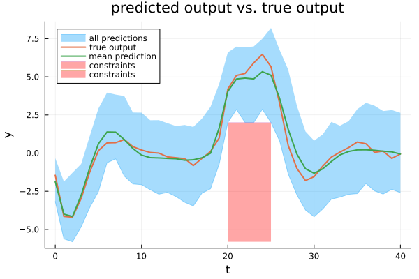

Optimal control with generic basis functions
This example reproduces the results of the optimal control approach with generic basis functions (Figure 3) given in Section V-C of the paper.

The method presented in the paper "A flexible state–space model for learning nonlinear dynamical systems" is utilized to systematically derive basis functions and priors for the parameters based on a reduced-rank GP approximation. Afterward, by calling the function particle_Gibbs(), samples are drawn from the posterior distribution using particle Gibbs sampling. These samples are then passed to the function solve_PG_OCP(), which solves the scenario OCP.
For the results in Table IV of the paper, this script is repeated with seeds 1:100.
A Julia script that contains all the steps described here can be found in the folder PGopt/Julia/examples.
The runtime of the script is about 2 hours on a standard laptop. Using an improved function phi() can reduce the runtime to about 50 minutes, but the results change slightly due to numerical reasons. Further explanations are given below.
Define parameters
First, load packages and initialize.
using PGopt
using LinearAlgebra
using Random
using Distributions
using Printf
using Plots
# Specify seed (for reproducible results).
Random.seed!(82)
# Time PGS algorithm.
sampling_timer = time()Then, specify the parameters of the algorithm.
# Learning parameters
K = 100 # number of PG samples
k_d = 50 # number of samples to be skipped to decrease correlation (thinning)
K_b = 1000 # length of burn-in period
N = 30 # number of particles of the particle filter
# Number of states, etc.
n_x = 2 # number of states
n_u = 1 # number of control inputs
n_y = 1 # number of outputsDefine basis functions
Then, generate generic basis functions and priors based on a reduced-rank GP approximation. The approach is described in the paper "A flexible state–space model for learning nonlinear dynamical systems". The equation numbers given in the following refer to this paper.
n_phi_x = [5 5] # number of basis functions for each state
n_phi_u = 5 # number of basis functions for the control input
n_phi_dims = [n_phi_u n_phi_x] # array containing the number of basis functions for each input dimension
n_phi = prod(n_phi_dims) # total number of basis functions
l_x = 20
L_x = [l_x l_x] # interval lengths for x
L_u = 10 # interval length for u
L = zeros(1, 1, n_z) # array containing the interval lengths
L[1, 1, :] = [L_u L_x]
# Hyperparameters of the squared exponential kernel
l = [2] # length scale
sf = 100 # scale factor
# Initialize.
j_vec = zeros(n_phi, 1, n_z) # contains all possible vectors j; j_vec[i, 1, :] corresponds to the vector j in eq. (5) for basis function i
lambda = zeros(n_phi, n_z) # lambda[i, :] corresponds to the vector λ in eq. (9) (right-hand side) for basis function iIn the following, all possible vectors $j$ are constructed (i.e., j_vec). The possible combinations correspond to the Cartesian product [1 : n_basis[1]] x ... x [1 : n_basis[end]].
cart_prod_sets = Array{Any}(undef, n_z) # array of arrays; cart_prod_sets[i] corresponds to the i-th set to be considered for the Cartesian product, i.e., [1 : n_basis[i]].
for i = 1:n_z
cart_prod_sets[i] = Array(1:n_phi_dims[i])
end
subscript_values = Array{Int64}(undef, n_z) # contains the equivalent subscript values corresponding to a given single index i
variants = [1; cumprod(n_phi_dims[1:end-1])] # required to convert the single index i to the equivalent subscript value
# Construct Cartesian product and calculate spectral densities.
for i in 1:n_phi
# Convert the single index i to the equivalent subscript values.
remaining = i - 1
for j in n_z:-1:1
subscript_values[j] = floor(remaining / variants[j]) + 1
remaining = mod(remaining, variants[j])
end
# Fill j_vec with the values belonging to the respective subscript indices.
for j in 1:n_z
j_vec[i, 1, j] = cart_prod_sets[j][subscript_values[j]]
end
# Calculate the eigenvalue of the Laplace operator corresponding to the vector j_vec[i, 1, :] - see eq. (9) (right-hand side).
lambda[i, :] = (pi .* j_vec[i, 1, :] ./ (2 * dropdims(L, dims=tuple(findall(size(L) .== 1)...)))) .^ 2
end
# Reverse j_vec.
j_vec = reverse(j_vec, dims=3)Then, define basis functions phi. This function evaluates $\phi_{1 : n_x+n_u}$ according to eq. (5). There are two implementations of the phi function.
Original implementation
This implementation is the original implementation, which is slow but exactly reproduces the results given in the paper.
function phi_sampling(x, u)
# Initialize.
z = vcat(u, x) # augmented state
phi = Array{Float64}(undef, n_phi, size(z, 2))
Threads.@threads for i in axes(z, 2)
phi_temp = ones(n_phi)
for k in axes(z, 1)
phi_temp .= phi_temp .* ((1 ./ (sqrt.(L[:, :, k]))) .* sin.((pi .* j_vec[:, :, k] .* (z[k, i] .+ L[:, :, k])) ./ (2 .* L[:, :, k])))
end
phi[:, i] .= phi_temp
end
return phi
endEfficient implementation
After the paper's publication, a much more efficient implementation was found, which, for numerical reasons, produces slightly different results (differences in the range $1\cdot 10^{-16}$ when called once). However, these minimal deviations lead to noticeably different results since the function phi is called recursively $T \cdot N \cdot K_{\mathrm{total}}$ times (= very often). This is the improved implementation, which is significantly faster but yields slightly different results.
# Precompute.
L_sqrt_inv = 1 ./ sqrt.(L)
pi_j_over_2L = pi .* j_vec ./ (2 .* L)
function phi_sampling(x, u)
# Initialize.
z = vcat(u, x) # augmented state
phi = ones(n_phi, size(z, 2))
for k in axes(z, 1)
phi .= phi .* (L_sqrt_inv[:, :, k] .* sin.(pi_j_over_2L[:, :, k] * (z[k, :] .+ L[:, :, k])'))
end
return phi
endDefine prior
Select the parameters of the inverse Wishart prior for $Q$.
ell_Q = 10 # degrees of freedom
Lambda_Q = 100 * I(n_x) # scale matrixDetermine the parameters of the matrix normal prior (with mean matrix $0$, right covariance matrix $Q$ (see above), and left covariance matrix $V$) for $A$. $V$ is derived from the GP approximation according to eq. (8b), (11a), and (9).
V_diagonal = Array{Float64}(undef, size(lambda, 1)) # diagonal of V
for i in axes(lambda, 1)
V_diagonal[i] = sf^2 * sqrt(opnorm(2 * pi * Diagonal(repeat(l, trunc(Int, n_z / size(l, 1))) .^ 2))) * exp.(-(pi^2 * transpose(sqrt.(lambda[i, :])) * Diagonal(repeat(l, trunc(Int, n_z / size(l, 1))) .^ 2) * sqrt.(lambda[i, :])) / 2)
end
V = Diagonal(V_diagonal)Provide an initial guess for the parameters.
Q_init = Lambda_Q # initial Q
A_init = zeros(n_x, n_phi) # initial AChoose the distribution of the initial state. Here, a normally distributed initial state is assumed.
x_init_mean = [2, 2] # mean
x_init_var = 1 * I # variance
x_init_dist = MvNormal(x_init_mean, x_init_var)Define the measurement model. It is assumed to be known (without loss of generality). Make sure that $g(x, u)$ is defined in vectorized form, i.e., g(zeros(n_x, N), zeros(n_u, N)) should return a matrix of dimension (n_y, N).
g(x, u) = [1 0] * x # observation function
R = 0.1 # variance of zero-mean Gaussian measurement noiseGenerate data
Generate training data.
# Parameters for data generation
T = 2000 # number of steps for training
T_test = 500 # number of steps used for testing (via forward simulation - see below)
T_all = T + T_test
# Unknown system
f_true(x, u) = [0.8 * x[1, :] - 0.5 * x[2, :] + 0.1 * cos.(3 * x[1, :]) .* x[2, :]; 0.4 * x[1, :] + 0.5 * x[2,:] + (ones(size(x, 2)) + 0.3 * sin.(2 * x[2, :])) .* u[1, :]] # true state transition function
Q_true = [0.03 -0.004; -0.004 0.01] # true process noise variance
mvn_v_true = MvNormal(zeros(n_x), Q_true) # true process noise distribution
g_true = g # true measurement function
R_true = R # true measurement noise variance
mvn_e_true = MvNormal(zeros(n_y), R_true) # true measurement noise distribution
# Input trajectory used to generate training and test data
mvn_u_training = Normal(0, 3) # training input distribution
u_training = rand(mvn_u_training, T) # training inputs
u_test = 3 * sin.(2 * pi * (1 / T_test) * (Array(1:T_test) .- 1)) # test inputs
u = reshape([u_training; u_test], 1, T_all) # training + test inputs
# Generate data by forward simulation.
x = Array{Float64}(undef, n_x, T_all + 1) # true latent state trajectory
x[:, 1] = rand(x_init_dist, 1) # random initial state
y = Array{Float64}(undef, n_y, T_all) # output trajectory (measured)
for t in 1:T_all
x[:, t+1] = f_true(x[:, t], u[:, t]) + rand(mvn_v_true, 1)
y[:, t] = g_true(x[:, t], u[:, t]) + rand(mvn_e_true, 1)
end
# Split data into training and test data.
u_training = u[:, 1:T]
x_training = x[:, 1:T+1]
y_training = y[:, 1:T]
u_test = u[:, T+1:end]
x_test = x[:, T+1:end]
y_test = y[:, T+1:end]Infer model
Run the particle Gibbs sampler to jointly estimate the model parameters and the latent state trajectory.
PG_samples = particle_Gibbs(u_training, y_training, K, K_b, k_d, N, phi, Lambda_Q, ell_Q, Q_init, V, A_init, x_init_dist, g, R)
time_sampling = time() - sampling_timerDefine and solve optimal control problem
Afterward, define the optimal control problem of the form
$\min \sum_{t=0}^{H} \frac{1}{2} u_t \operatorname{diag}(R_{\mathrm{cost}}) u_t$
subject to:
\[\begin{aligned} \forall k, \forall t \\ x_{t+1}^{[k]} &= f_{\theta^{[k]}}(x_t^{[k]}, u_t) + v_t^{[k]} \\ x_{t, 1:n_y}^{[k]} &\geq y_{\mathrm{min},\ t} - e_t^{[k]} \\ x_{t, 1:n_y}^{[k]} &\leq y_{\mathrm{max},\ t} - e_t^{[k]} \\ u_t &\geq u_{\mathrm{min},\ t} \\ u_t &\leq u_{\mathrm{max},\ t}. \end{aligned}\]
(Note that the output constraints imply the measurement function $y_t^{[k]} = x_{t, 1:n_y}^{[k]}$.)
# Horizon
H = 41
# Define constraints for u and y.
u_max = [5] # max control input
u_min = [-5] # min control input
y_max = reshape(fill(Inf, H), (1, H)) # max system output
y_min = reshape([-fill(Inf, 20); 2 * ones(6); -fill(Inf, 15)], (1, H)) # min system output
R_cost_diag = [2] # diagonal of R_costSolve the optimal control problem. In this case, no formal guarantees for the constraint satisfaction can be derived since Assumption 1 is not satisfied as the employed basis functions cannot represent the actual dynamics with arbitrary precision.
x_opt, u_opt, y_opt, J_opt, penalty_max = solve_PG_OCP(PG_samples, phi_opt, R, H, u_min, u_max, y_min, y_max, R_cost_diag; K_pre_solve=20, opts=opts)[[1, 2, 3, 4, 8]]Finally, apply the input trajectory to the actual system and plot the output trajectories.
# Apply input trajectory to the actual system.
y_sys = Array{Float64}(undef, n_y, H)
x_sys = Array{Float64}(undef, n_x, H)
x_sys[:, 1] = x_training[:, end]
u_sys = [u_opt 0]
for t in 1:H
if t >= 2
x_sys[:, t] = f_true(x_sys[:, t-1], u_sys[:, t-1]) + rand(mvn_v_true, 1)
end
y_sys[:, t] = g_true(x_sys[:, t], u_sys[:, t]) + rand(mvn_e_true, 1)
end
# Plot predictions.
plot_predictions(y_opt, y_sys; plot_percentiles=false, y_min=y_min, y_max=y_max)